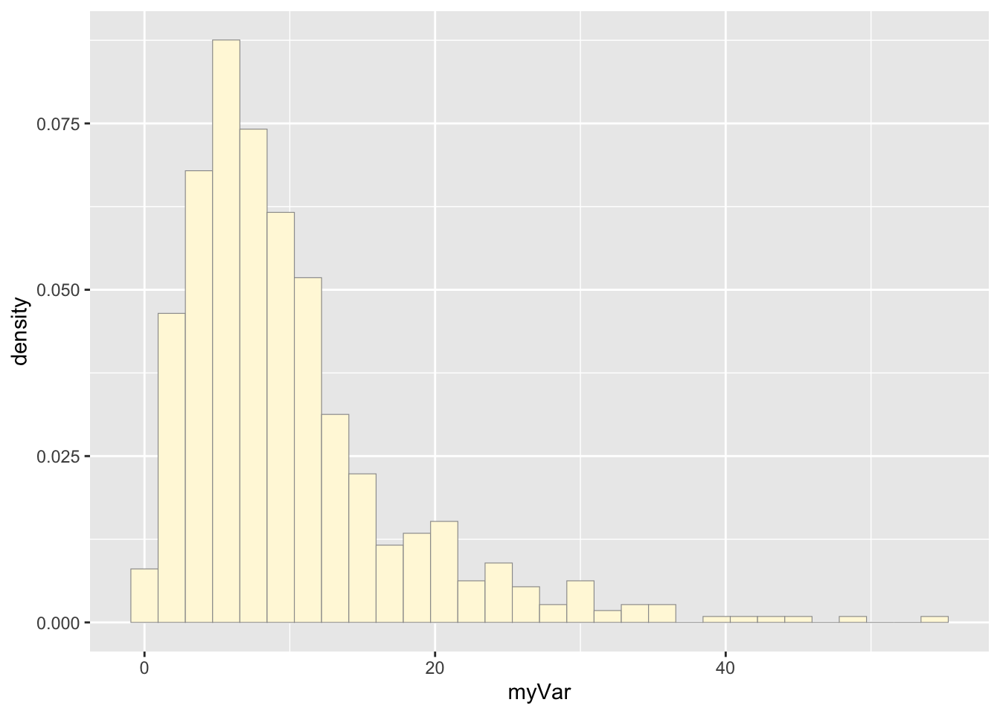
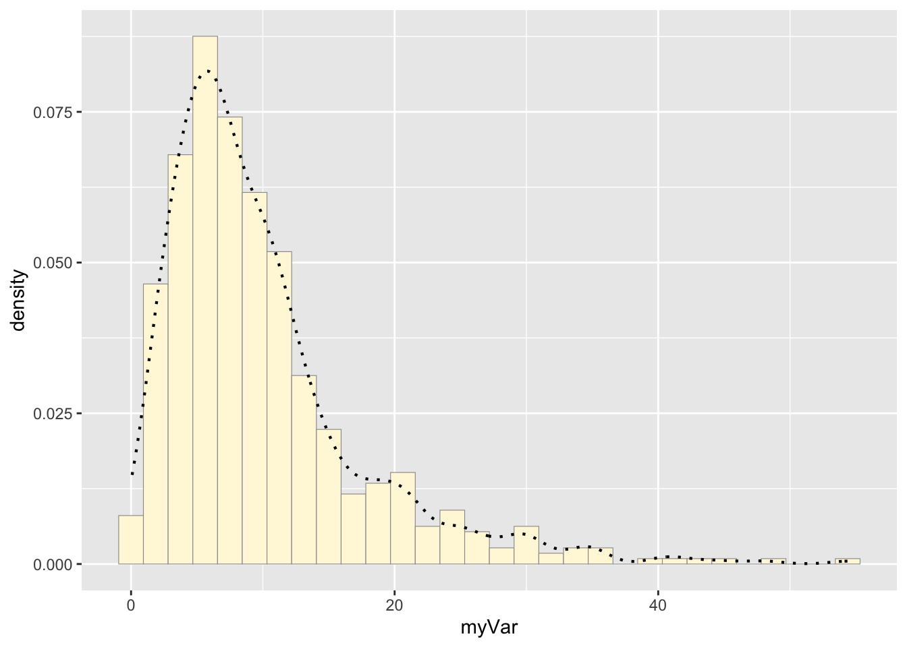
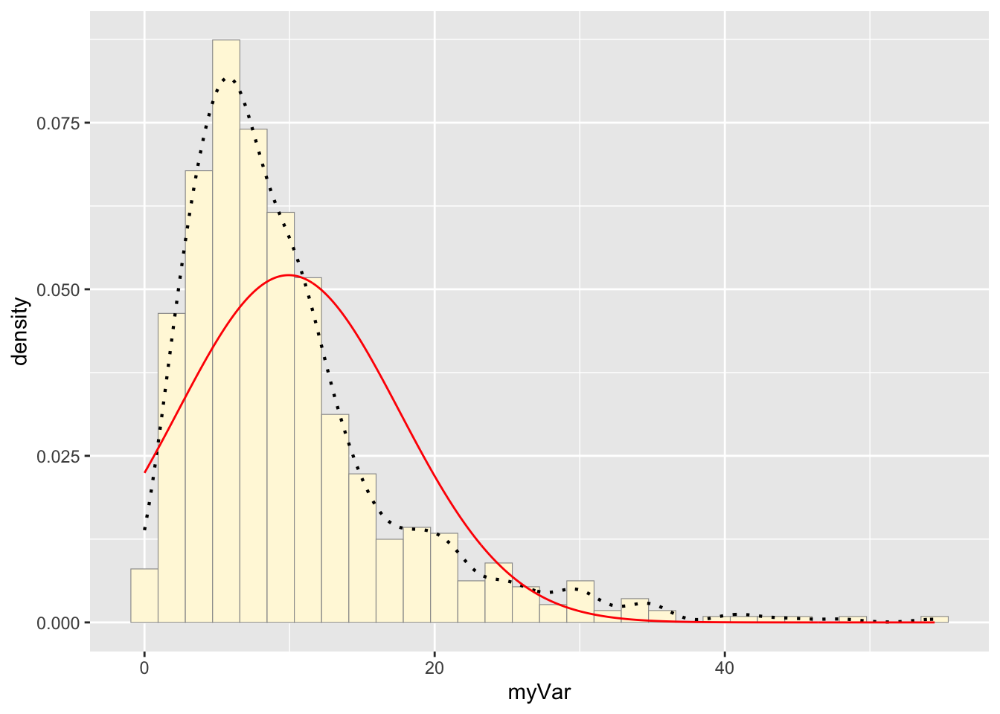
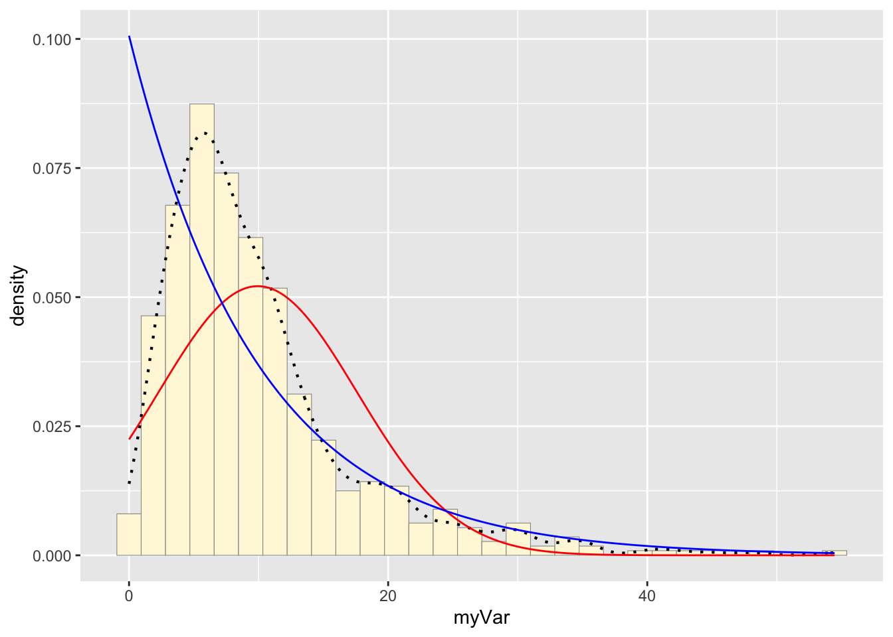
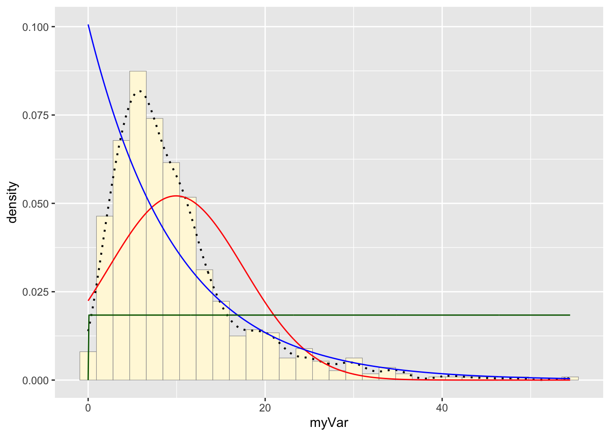
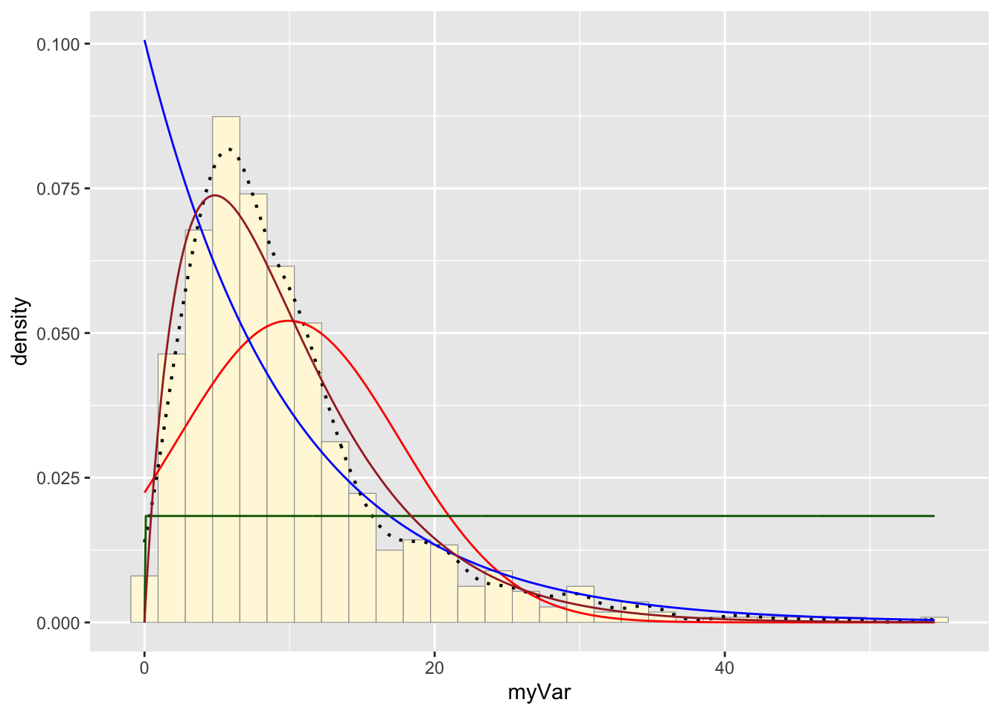
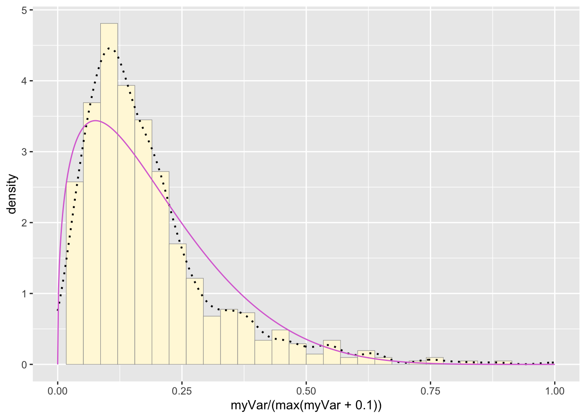
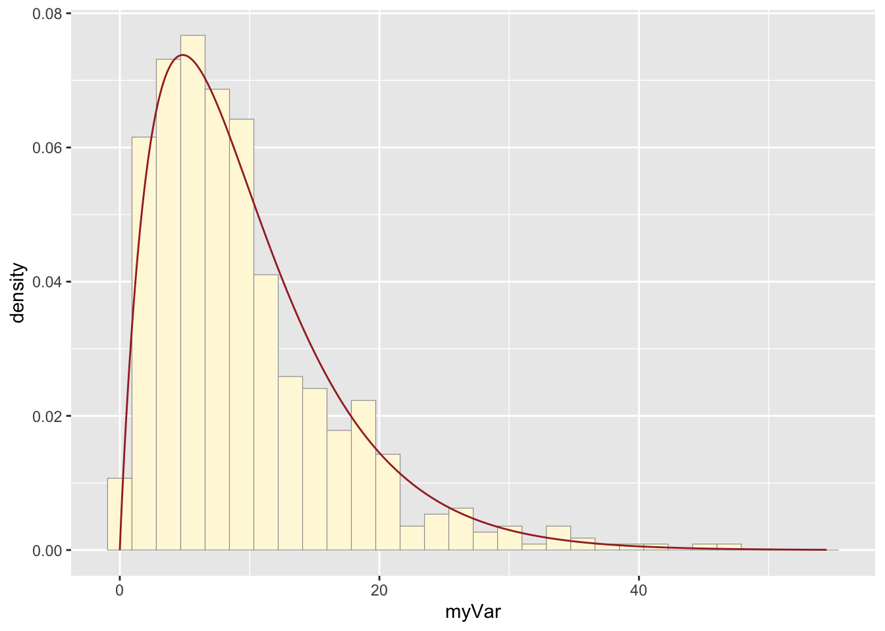
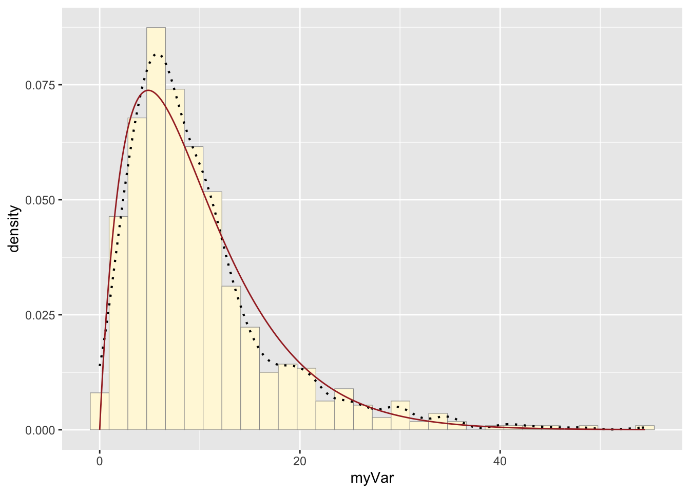

library(ggplot2) # for graphics
library(MASS) # for maximum likelihood estimation
library(tidyverse)## ── Attaching core tidyverse packages ──────────────────────── tidyverse 2.0.0 ──
## ✔ dplyr 1.1.4 ✔ readr 2.1.5
## ✔ forcats 1.0.0 ✔ stringr 1.5.1
## ✔ lubridate 1.9.4 ✔ tibble 3.2.1
## ✔ purrr 1.0.2 ✔ tidyr 1.3.1
## ── Conflicts ────────────────────────────────────────── tidyverse_conflicts() ──
## ✖ dplyr::filter() masks stats::filter()
## ✖ dplyr::lag() masks stats::lag()
## ✖ dplyr::select() masks MASS::select()
## ℹ Use the conflicted package (<http://conflicted.r-lib.org/>) to force all conflicts to become errorsz <- read.table("Homework8Data.csv", header=TRUE, sep=",")
z <- select(z, Rainfall)
z <- data.frame(1:597, z)
names(z) <- list("ID","myVar")
z <- z[z$myVar>0,]
str(z)## 'data.frame': 597 obs. of 2 variables:
## $ ID : int 1 2 3 4 5 6 7 8 9 10 ...
## $ myVar: num 9.14 7.14 13.39 9.17 3.38 ...summary(z$myVar)## Min. 1st Qu. Median Mean 3rd Qu. Max.
## 0.080 4.830 7.820 9.937 12.290 54.460Packages were loaded in to allow for ggplot and tidyverse commands. Z
was assigned the data table, and it was modified to only include the
values from the “Rainfall” column using select(). A data
frame of two columns, “ID” and “myVar” (the rainfall data), was then
made using data.frame() and names().
p1 <- ggplot(data=z, aes(x=myVar, y=..density..)) +
geom_histogram(color="grey60",fill="cornsilk",size=0.2)
print(p1)## `stat_bin()` using `bins = 30`. Pick better value with `binwidth`.
The variable p1 was assigned a histogram using the “myVar” data from data frame z. “myVar” values were the x values which were plotted against their density (y).
p1 <- p1 + geom_density(linetype="dotted",size=0.75)
print(p1)## `stat_bin()` using `bins = 30`. Pick better value with `binwidth`.
An empirical density line was added to the histogram plot by
assigning p1 to equal p1 + the density curve line (made
with geom_density)
normPars <- fitdistr(z$myVar,"normal")
print(normPars)## mean sd
## 9.9371357 7.6544595
## (0.3132762) (0.2215197)str(normPars)## List of 5
## $ estimate: Named num [1:2] 9.94 7.65
## ..- attr(*, "names")= chr [1:2] "mean" "sd"
## $ sd : Named num [1:2] 0.313 0.222
## ..- attr(*, "names")= chr [1:2] "mean" "sd"
## $ vcov : num [1:2, 1:2] 0.0981 0 0 0.0491
## ..- attr(*, "dimnames")=List of 2
## .. ..$ : chr [1:2] "mean" "sd"
## .. ..$ : chr [1:2] "mean" "sd"
## $ n : int 597
## $ loglik : num -2062
## - attr(*, "class")= chr "fitdistr"normPars$estimate["mean"] # note structure of getting a named attribute## mean
## 9.937136The function fitdistr() found the mean and standard
deviation of the data following a normal probability distribution. This
data, a list of 5, was stored in the variable normPars. The mean was
isolated with normPars$estimate["mean']: the variable was
called for, the list item was specified with $, and the
mean was found by matching its name.
meanML <- normPars$estimate["mean"]
sdML <- normPars$estimate["sd"]
xval <- seq(0,max(z$myVar),len=length(z$myVar))
stat <- stat_function(aes(x = xval, y = ..y..), fun = dnorm, colour="red", n = length(z$myVar), args = list(mean = meanML, sd = sdML))
p1 + stat## `stat_bin()` using `bins = 30`. Pick better value with `binwidth`.
The variable stat was assigned a dnorm function that
created a normal probability density curve based on the mean and
standard deviation held in normPars. The curve was then added to the
histogram with p1 + stat.
expoPars <- fitdistr(z$myVar,"exponential")
rateML <- expoPars$estimate["rate"]
stat2 <- stat_function(aes(x = xval, y = ..y..), fun = dexp, colour="blue", n = length(z$myVar), args = list(rate=rateML))
p1 + stat + stat2## `stat_bin()` using `bins = 30`. Pick better value with `binwidth`.
fitdistr() was used to fit the data to the exponential
density model. The variable stat1 was then assigned a dexp
function that created an exponential probability density curve based on
the rate found by fitdistr(). The new curve was added to
the histogram.
stat3 <- stat_function(aes(x = xval, y = ..y..), fun = dunif, colour="darkgreen", n = length(z$myVar), args = list(min=min(z$myVar), max=max(z$myVar)))
p1 + stat + stat2 + stat3## `stat_bin()` using `bins = 30`. Pick better value with `binwidth`.
The variable stat3 was assigned a dunif function that
created a uniform probability density curve based on the maximum and
minimum values of “myVar”. The curve generated was added to the
histogram.
gammaPars <- fitdistr(z$myVar,"gamma")
shapeML <- gammaPars$estimate["shape"]
rateML <- gammaPars$estimate["rate"]
stat4 <- stat_function(aes(x = xval, y = ..y..), fun = dgamma, colour="brown", n = length(z$myVar), args = list(shape=shapeML, rate=rateML))
p1 + stat + stat2 + stat3 + stat4## `stat_bin()` using `bins = 30`. Pick better value with `binwidth`.
The function fitdistr() found the shape and rate of the
data following a gamma probability distribution. This data was stored in
the variable gammaPars. The variable stat4 was assigned a
dgamma function that created a gamma probability density
curve based on the rate and shape found in gammaPars. The curve
generated was added to the histogram.
pSpecial <- ggplot(data=z, aes(x=myVar/(max(myVar + 0.1)), y=..density..)) +
geom_histogram(color="grey60",fill="cornsilk",size=0.2) +
xlim(c(0,1)) +
geom_density(size=0.75,linetype="dotted")
betaPars <- fitdistr(x=z$myVar/max(z$myVar + 0.1),start=list(shape1=1,shape2=2),"beta")
shape1ML <- betaPars$estimate["shape1"]
shape2ML <- betaPars$estimate["shape2"]
statSpecial <- stat_function(aes(x = xval, y = ..y..), fun = dbeta, colour="orchid", n = length(z$myVar), args = list(shape1=shape1ML,shape2=shape2ML))
pSpecial + statSpecial## `stat_bin()` using `bins = 30`. Pick better value with `binwidth`.
A new histogram was made to accommodate the differing x value
parameters of a beta probability density curve. The new histogram,
pSpecial, plotted the density of the “myVar” values on a scale of 0 to 1
by dividing each value by 0.1 more than the maximum value of the
dataset. These values were also used to fit the data to a beta
probability density distribution. The two shapes found by the
fitdistr() function were used to make a beta probability
density curve that was added to the new histogram.
The data best fit the gamma probability density model.
y <- rgamma(597, 1.95, rate=0.197)
y <- data.frame(1:597, y)
names(y) <- list ("ID", "myVar")
y <- y[y$myVar>0,]
py <- ggplot(data=y, aes(x=myVar, y=..density..)) +
geom_histogram(color="grey60",fill="cornsilk",size=0.2)
print(py + stat4)## `stat_bin()` using `bins = 30`. Pick better value with `binwidth`.
print(p1 + stat4)## `stat_bin()` using `bins = 30`. Pick better value with `binwidth`.
A new vector of values, y, was made by using rgamma() to
generate data that fit the gamma model and had the same parameters
(shape and rate) as the origional dataset, z. The vector was made into a
data frame with the values now under the name “myVar”. A new plot, py,
generated a historgram of the new values. The gamma distribution curve
made before was printed with the new histogram, and the origional
histogram was also printed with the same gamma distribution curve. The
histograms look fairly similar: they have very similar shapes, but the
origional data reaches a higher maximum. While the model was mostly
realistic, it did not fully capture the density of the most popular x
values.